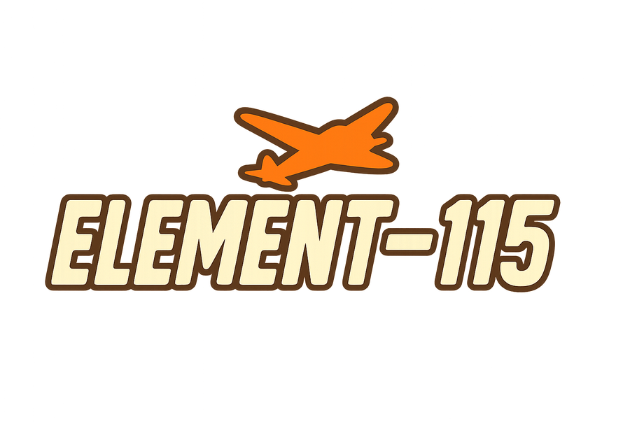

W/S PITCH · A/D BANK · Q/E RUDDER
SHIFT/CTRL THROTTLE · SPACE GUNS · X/DOUBLE-SPACE MSL · V FLARES · Z SMOKE · C TARGET · R RESPAWN
TRAINING SECTOR // CANYON RUN

FREE FLIGHT · LANDING TRAINING · REGENERATIVE TERRAIN
W/S, PAD LS, or TOUCH STICK — PITCH
A/D, PAD LS, or TOUCH STICK — BANK · Q/E or RB/LB — RUDDER
SHIFT/CTRL, RT/LT, or TOUCH THROTTLE — POWER
SPACE, A, or FIRE — BULLET GUNS · C — CYCLE TARGET · X or MSL — MISSILE
M or DPAD RIGHT — NEXT PLANE · R, START, or RESET — RESTART · BACK — RACE · F — FULLSCREEN
KEYBOARD · CONTROLLER · TOUCH · SOUND ENABLES ON START · SEED ----
CLICK, TAP, PRESS ANY KEY, OR PRESS A ON CONTROLLER TO FLY